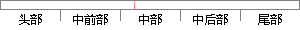

因此，为了保证任务的实时性，本设计的嵌入式操作系统是采用基于优先级的抢占式调度机制。
片段位置图

相似结果
相似片段：[图文]2011年05月27 - ,并控制所有实时任务协调一致运行的嵌入式操作系统。...通常,多任务调度机制分为基于优先级抢占式调度和时间...系统采用优先级抢占方式进行调度,可以保证重要的突发...
| 标题 | 《嵌入式实时操作系统的任务管理及任务调度_木子兰兰_新浪博客》 |
| 对比库 | PaperRater云论文库 |
| 网址 | http://blog.sina.com.cn/s/blog_7d52bc370100t0ox.html |
| 相似率 | 81.25% （严重抄袭） |
※ 片段修改建议 ※
近似词参考：- 任务：使命 义务
- 因此：是以 因而
- 采用：采取 接纳 采纳
- 调度：调剂 调理
- 设计：计划
- 实时：及时
- 保证：包管
系统自动生成语句：是以，为了包管使命的及时性，本计划的嵌入式操作系统是采取基于优先级的抢占式调剂机制。
注：本片段修改建议为系统自动生成，仅供参考。